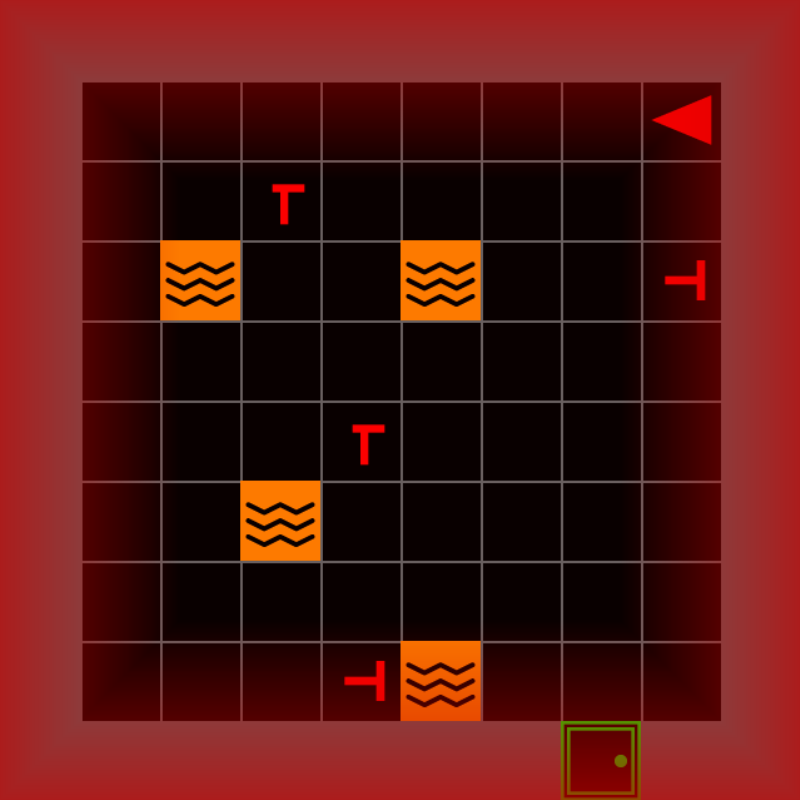

MOSAICModular System for Adaptive
Human–AI Collaboration
A Configurable Testbed for Human–AI TeamingIEEE SMC 2026 · Bellevue, WAgithub.com/iHuman-Lab/mosaic
October 4, 2026
Meet the iHuman Lab
We study how people and intelligent systems work together.

Hemanth Manjunatha Principal Investigator

Elahe Oveisi PhD Candidate

Bennett Kwaku Dogbey PhD Student
Our work spans brain–computer interfaces, human–robot interaction, human-AI interaction, and cognitive augmentation.
What Is MOSAIC?
MOSAIC is a modular testbed for human–AI teaming research. Configure its components for each study.

01
Interactive task
Search and rescue, move by move


03
Configurable conditions
Map, hazards, view, and scoring
MOSAIC
modular · configurable

02
Controllable AI teammate
Scripted and LLM teammates, one interface
04
Synchronized data
Task, advice, and sensors on one timeline
MOSAIC lets researchers vary the task and AI teammate, then record the interaction.
The Task: Search and Rescue

Mission
Search a multiroom building and rescue the real victims.
Real victims and decoys look alike, so an AI teammate’s advice can help or mislead.
Part Three plays the mission.
Search and rescue provides a controlled but consequential setting for studying human–AI decisions.
Run the Included Mission
Window It opens fullscreen. F11 toggles a window (macOS: fn+F11, or set fullscreen: false in configs/experiment.yaml).
Move Arrow keys turn and walk the agent
Terminal Font warnings and connect_all failed lines are normal

You should see this: the room on the left, the panels on the right.
The Search-and-Rescue Mission
Explore, tell real victims from decoys, and rescue them before time runs out.

Explore
Move room to room. A locked door needs the key of the same color.
Identify
Both are red T shapes. A real victim’s stem is centered; a decoy’s is off-center.
Decide
A real victim earns a point, a decoy costs one, and the clock keeps running.
Every choice has a consequence you can see and score.
Game Interface
What each tile means, and where to read the mission.

Game viewport — the green flash is rescue feedback
Information panel — rescued, remaining, steps, inventory
Mission status and score — reward and the clock
Controls, always on screen
Chat panel — where AI teammate advice arrives

You the red triangle

Victim rescue with Tab

Decoy costs a point

Lava ends the mission

Door Space opens it

Locked door needs the key of its color

Key Tab picks it up
Victims and Decoys
Real victims and decoys are both red T shapes. Only real victims have health.

REAL VICTIM DECOY


100% 60% 25% 0%
In the study runner, the white bar shows a victim’s health.
Symbols A real victim’s stem sits in the middle of the bar. A decoy’s is off-center.
Health In the lab’s study runner, health drains while a victim is in view, faster near lava, and the victim dies at zero. In today’s mission it stays full.
Rescue Stand next to a victim, face it, and press Tab. The score updates at once.
+1.0 Real victim rescued
−1.0 Decoy rescued
−2.0 Victim died · study runner
Real victims earn points and decoys cost them. Telling them apart is where advice matters.
Controls and Gameplay
Four actions. Each clip shows what its keys do.

Navigate
↑ Move forward one tile
←→ Turn to face a new direction

Open
Space Open the door you are facing
Locked doors open only while you carry the matching key.

Pick up or rescue
Tab Take the key, or rescue the victim, you are facing

Request advice
Alt Ask the AI teammate
The reply appears in the chat panel. Today’s placeholder teammate answers “Currently, no commands are available.” Part Four gives it a real one.
Runtime Architecture
Four parts you can change, built on Gymnasium and MiniGrid.
↑ ← → Space Tab Alt
Human participant
Watches the screen and presses keys.
keys
frames
4.2 GUI mosaic.gui
Game view, panels, chat, and feedback.
action
observation
4.1 SAR mosaic.sar
Rooms, victims, rules, and rewards.
physiological signals
context · advice
built on
4.4 Sensing experiment/
Gaze and EEG on the game’s clock, through LSL.
4.3 LLM mosaic.llm
Reads the task, replies in the chat.
obs, reward, terminated, truncated, info = env.step(action)
Gymnasium + MiniGrid
The step API and the grid world.
What the Participant Sees
Map 4.1 SAR 4.2 GUI 4.3 LLM 4.4 Sensing
Line 44 sets the camera. One walk through a door, three cameras:

Edge-following
EdgeFollowCamera · scrolls with the agent

Whole room
AgentFOVCamera · the default

Forward cone
AgentConeCamera · only what is ahead
Agent same tile in all three · Room the agent’s room
Same task. The camera sets what the participant can see.
Rescue Rewards
Map 4.1 SAR 4.2 GUI 4.3 LLM 4.4 Sensing
Try it Make rescuing a decoy cost 5 points instead of 1.
src/experiment/main.py an import, then inside build_sar_env
+from mosaic.sar.actions import RescueAction, RescueRewards
@@ inside build_sar_env(...) @@
camera_strategy=AgentFOVCamera(),
+ action=RescueAction(
+ rewards=RescueRewards(fake_victim=-5.0)),Run Relaunch and rescue a decoy.
What will the reward read?

Before · the default

After · fake_victim=-5.0
4.2 · GUI
Map 4.1 SAR 4.2 GUI 4.3 LLM 4.4 Sensing
Lines 50–51 open the participant’s window.
src/experiment/main.py lines 50–51
Three things to change
1 Feedback flash Demo · next
vignette=EdgeVignette(...)
How a mistake feels
2 Info panel Appendix
info_panel=
What progress is shown
3 Time limit Appendix
max_time: (YAML)
How much time pressure
Feedback Flashes
Map 4.1 SAR 4.2 GUI 4.3 LLM 4.4 Sensing
Presenter demo Make the red flash after a decoy stronger and longer.
src/experiment/main.py an import, then the gui = line
+from mosaic.gui.feedback import EdgeVignette, VignetteStyle
@@ further down @@
- gui = SAREnvGUI(env, config=config, llm_client=llm_client)
+ gui = SAREnvGUI(env, config=config, llm_client=llm_client,
+ vignette=EdgeVignette(800, styles={"wrong_victim":
+ VignetteStyle((200, 0, 0), 200, 1.5, "fade")}))Run Relaunch and rescue a decoy.
How will the mistake feel different?

Before · default, 0.6 s

After · stronger, 1.5 s
Locked Rooms
Set the chance that a room is locked: 0.5 locks about half, 0.9 most.
src/experiment/main.py line 43
-locked_room_placer=LockedRoomPlacer(locked_room_prob=0.5),
+locked_room_placer=LockedRoomPlacer(locked_room_prob=0.9),Run Relaunch and walk to the nearest door.
How much of the building can you still reach?

Before · 0.5: 4 locked doors

After · 0.9: 8 locked doors
Time Limit
Give the mission 2 minutes instead of 5.
configs/experiment.yaml a new top-level line, not under game:
display: &display 0
fullscreen: &fullscreen true
+max_time: 2Run Relaunch and watch the timer.
How will you play with only 2 minutes?

Before · the default

After · max_time: 2
At 0:00 the timer stops; the mission keeps going.